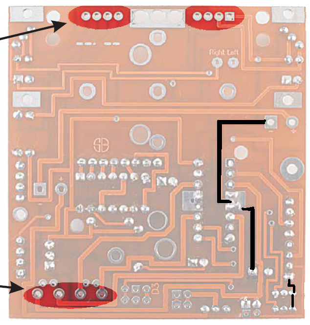
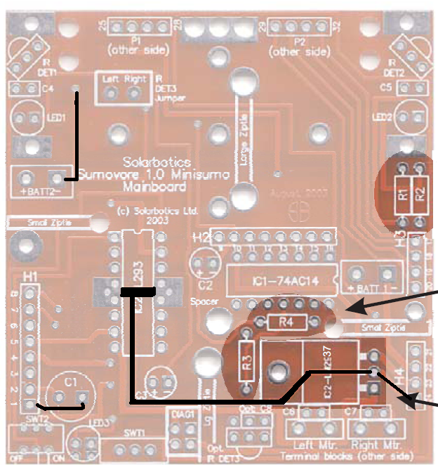
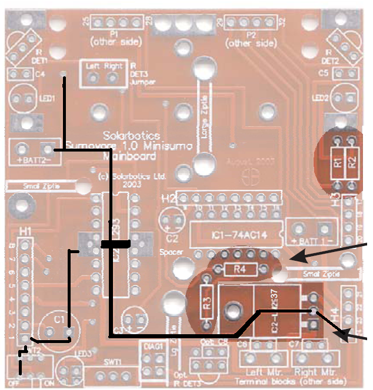
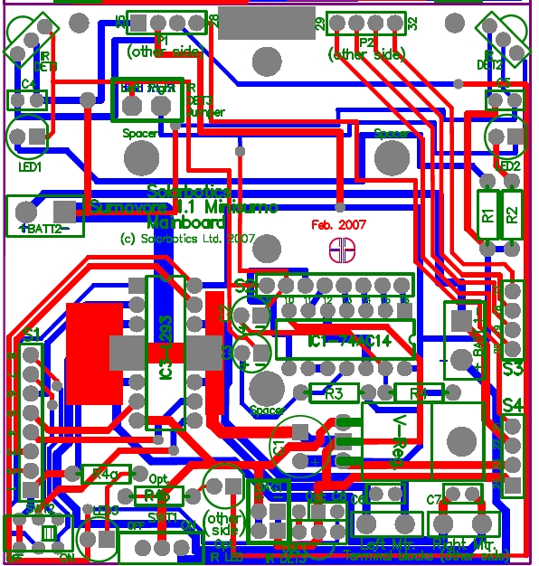
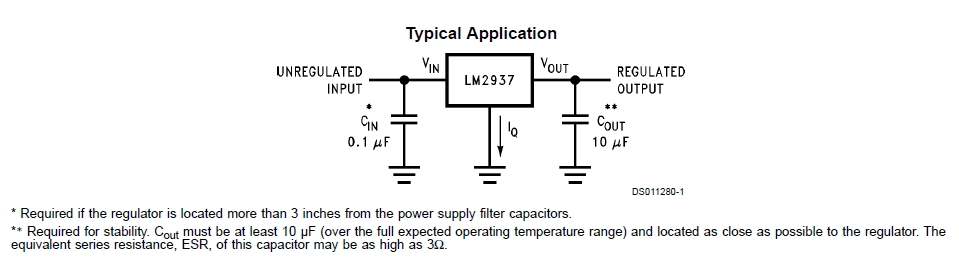
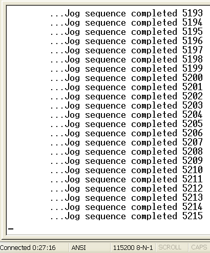
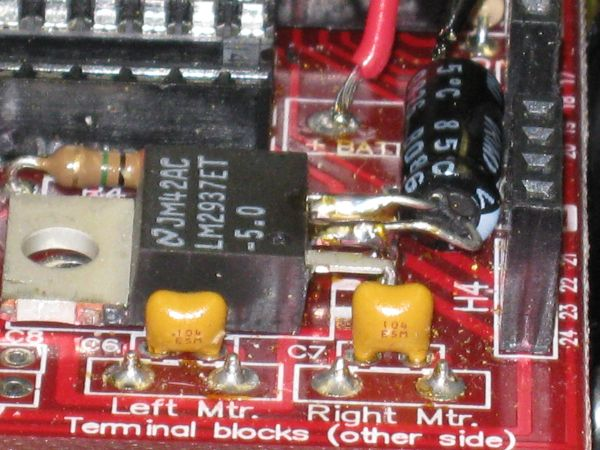

June 16, 2010
Sumovore 1.0 main board solder side with ground highlighted
Sumovore 1.0 main board component side with ground highlighted
Sumovore 1.0 main board with ground from both sides highlighted
Note that the 1000 micro farad capacitor C1 is a very long way away from the output of the regulator and H4. Also not that the ground side of Batt 2 is a long way from the regulator and the motor driver chip is in-between C1 and the regulator.
On the new brain board the 1000 micro farad capacitor C1 was moved to a position between the regulator and the motor driver. The trace between the motor driver and the capacitor is made very wide reducing resistance and stray inductance of trace. I believe the proximety of C1 to the regulator output helps stablize the regulator output voltage. The absence of a capacitor at the input to the regulator explains why the regulated voltage is unstable when I use my battery eliminator with long wires.
(rev. June 21, 2010) The image below is directly from Solarbotics. This is from their artwork for the board design. Red traces are on the component side and Blue traces are on the solder side (I think it is blue; I am color blind). The wide trace from the BATT2 negative terminal should help reduce the voltage variation along the trace do to transient currents.

June 17, 2010
The following is from the datasheet for the LM2937:
It appears the essential problem with the version 1.0 sumovore mainboard is the Cout capacitor is too far from the output of the regulator. Based on the datasheet note ** shown above it is safe to assume that the distance between the regulator and Cout is resulting in an unstable 5 volt output!.
Also from this one can conclude the problem with stability when using my battery eliminator is that the wires are too long (there is no Cin capacitor on the board!).
(5pm)
A 22 micro farad capacitor was added to the output pins of the LM2937 regulator and ran a jog test. There were no brown out resets after 5215 jog cycles (I shut it down at that point). Before adding the capacitor not one of the old 1.0 version robots could run even a single jog cycle without having a brownout reset. The version 1.1 robots did not have this issue. It appears the capacitor has solved the problem for the version 1.0 robots.Note that in the past we did not have the brownout detect circuit of the PIC enabled. It is clear that not every brownout causes the PIC to fail to correctly execute code but there has been a strong correlation between the conditions written into the jog sequence an occasional failures to execute code correctly. Brownouts do cause reliability issues so it does seem to be important to eliminate the brownouts.
 